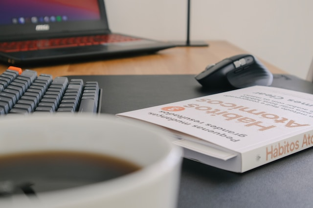

Code Daily

Photo by
Nubelson Fernandes
on
Unsplash
Description
This is recipe for cultivating a regular coding practice.
Ingredients
Steps
- After I grab my coffee
- I'll open The Odin Project and VS Code
- Work for at least half an hour
- Then celebrate by crossing off a day in my tracker
Return to Main